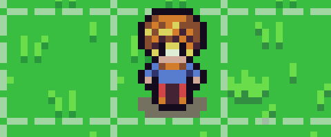
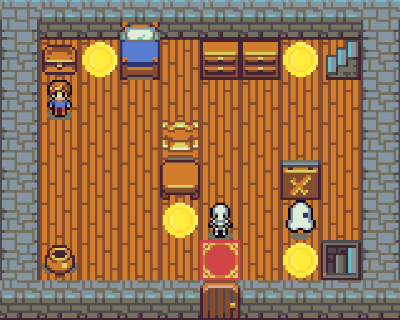

Projet Jeu Vidéo
Ce projet vise à développer un jeu vidéo en 2D avec une interface graphique en C++, en utilisant la bibliothèque SDL. Le jeu est conçu de manière modulaire, ce qui permet une gestion efficace de ses différentes composantes. La bibliothèque SDL est employée pour gérer les graphiques, les événements et les sons, offrant ainsi une expérience utilisateur immersive. Le projet inclut la gestion des entrées utilisateur, permettant de contrôler les personnages et les éléments du jeu. Des algorithmes de détection de collision sont implémentés pour gérer les interactions entre les objets du jeu. L'interface graphique est conçue pour être intuitive et réactive, facilitant l'interaction avec le jeu. Ce projet démontre une compréhension approfondie de la programmation en C++ et de l'utilisation de bibliothèques graphiques.
